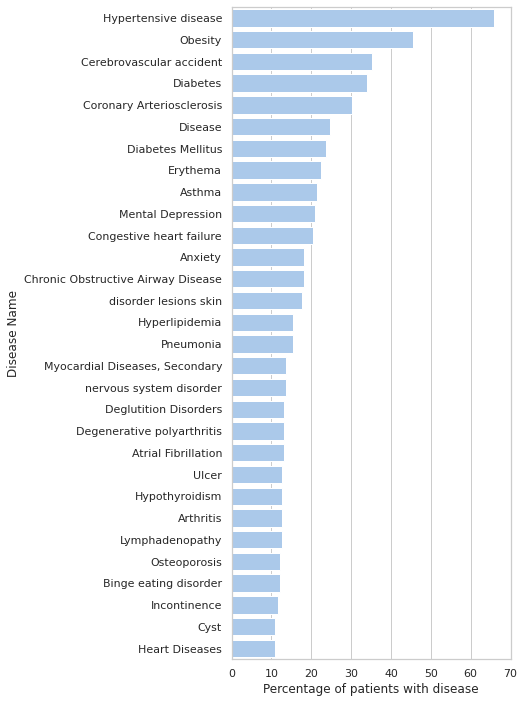

[1]:
import ehrapy.api as ep
import spacy
import pandas as pd
Unable to contact PyPI to check for the latest ehrapy version. Do you have an internet connection?
/home/zeth/miniconda3/envs/ehrapy/lib/python3.8/site-packages/medcat/cat.py:16: TqdmExperimentalWarning: Using `tqdm.autonotebook.tqdm` in notebook mode. Use `tqdm.tqdm` instead to force console mode (e.g. in jupyter console)
from tqdm.autonotebook import tqdm
[2]:
ep.settings.n_jobs=8
[3]:
# !python -m spacy download en_core_web_sm
[4]:
# !wget https://medcat.rosalind.kcl.ac.uk/media/vocab.dat -P ./medcat_data/
# !wget https://medcat.rosalind.kcl.ac.uk/media/cdb-medmen-v1_2.dat -P ./medcat_data/
# !wget https://raw.githubusercontent.com/CogStack/MedCAT/master/tutorial/data/pt_notes.csv -P ./medcat_data/
# !wget https://medcat.rosalind.kcl.ac.uk/media/medmen_wstatus_2021_oct.zip -P ./medcat_data/
Custom MedCAT object¶
[5]:
# Mind your dependencies and environments. This may clash with existing Spacy models!
# !pip install https://s3-us-west-2.amazonaws.com/ai2-s2-scispacy/releases/v0.4.0/en_core_sci_lg-0.4.0.tar.gz
[6]:
medcat = ep.tl.MedCAT()
vocabulary = medcat.load_vocabulary("./medcat_data/vocab.dat")
concept_db = medcat.load_concept_db("./medcat_data/cdb-medmen-v1.dat")
concept_db.config.ner['min_name_len'] = 2
concept_db.config.ner['upper_case_limit_len'] = 3
concept_db.config.general['spell_check'] = True
concept_db.config.linking['train_count_threshold'] = 10
concept_db.config.linking['similarity_threshold'] = 0.3
concept_db.config.linking['train'] = True
concept_db.config.linking['disamb_length_limit'] = 5
concept_db.config.general['full_unlink'] = True
medcat.update_cat(vocabulary=vocabulary, concept_db=concept_db)
[7]:
text = "He was diagnosed with kidney failure"
doc = medcat.cat(text)
doc.ents
[7]:
(diagnosed, kidney failure)
[8]:
medcat.cat.get_entities("He was diagnosed with kidney failure", only_cui=False)
[8]:
{'entities': {0: {'pretty_name': 'Diagnosis',
'cui': 'C0011900',
'type_ids': ['T060'],
'types': ['Diagnostic Procedure'],
'source_value': 'diagnosed',
'detected_name': 'diagnosed',
'acc': 0.3913008909798732,
'context_similarity': 0.3913008909798732,
'start': 7,
'end': 16,
'icd10': [],
'ontologies': [],
'snomed': [],
'id': 0,
'meta_anns': {}},
2: {'pretty_name': 'Kidney Failure',
'cui': 'C0035078',
'type_ids': ['T047'],
'types': ['Disease or Syndrome'],
'source_value': 'kidney failure',
'detected_name': 'kidney~failure',
'acc': 1.0,
'context_similarity': 1.0,
'start': 22,
'end': 36,
'icd10': [],
'ontologies': [],
'snomed': [],
'id': 2,
'meta_anns': {}}},
'tokens': []}
Extracting disease entities from an existing dataset¶
[3]:
data = pd.read_csv("./medcat_data/pt_notes.csv")
[4]:
data.head()
[4]:
| Unnamed: 0_x | subject_id | chartdate | category | text | create_year | Unnamed: 0_y | gender | dob | dob_year | age_year | |
|---|---|---|---|---|---|---|---|---|---|---|---|
| 0 | 6 | 1 | 2079-01-01 | General Medicine | HISTORY OF PRESENT ILLNESS:, The patient is a ... | 2079 | 1 | F | 2018-01-01 | 2018 | 61 |
| 1 | 7 | 1 | 2079-01-01 | Rheumatology | HISTORY OF PRESENT ILLNESS: , A 71-year-old fe... | 2079 | 1 | F | 2018-01-01 | 2018 | 61 |
| 2 | 8 | 1 | 2079-01-01 | Consult - History and Phy. | HISTORY OF PRESENT ILLNESS:, The patient is a ... | 2079 | 1 | F | 2018-01-01 | 2018 | 61 |
| 3 | 9 | 2 | 2037-01-01 | Consult - History and Phy. | CHIEF COMPLAINT:,1. Infection.,2. Pelvic pai... | 2037 | 2 | F | 2018-01-01 | 2018 | 19 |
| 4 | 10 | 2 | 2037-01-01 | Dermatology | SUBJECTIVE:, This is a 29-year-old Vietnamese... | 2037 | 2 | F | 2018-01-01 | 2018 | 19 |
[5]:
with pd.option_context('display.max_rows', None, 'display.max_columns', None):
print(data["text"][0])
HISTORY OF PRESENT ILLNESS:, The patient is a 71-year-old Caucasian female with a history of diabetes, osteoarthritis, atrial fibrillation, hypertension, asthma, obstructive sleep apnea on CPAP, diabetic foot ulcer, anemia and left lower extremity cellulitis. She was brought in by the EMS service to Erlanger emergency department with pulseless electrical activity. Her husband states that he was at home with his wife, when she presented to him complaining of fever and chills. She became acutely unresponsive. She was noted to have worsening of her breathing. She took several of her MDIs and then was placed on her CPAP. He went to notify EMS and when he returned, she was found to not be breathing. He stated that she was noted to have no breathing in excess of 10 minutes. He states that the EMS system arrived at the home and she was found not breathing. The patient was intubated at the scene and upon arrival to Erlanger Medical Center, she was found to have pupils fixed and dilated. She was seen by me in the emergency department and was on Neo-Synephrine, dopamine with a blood pressure of 97/22 with a rapid heart rate and again, in an unresponsive state.,REVIEW OF SYSTEMS:, Review of systems was not obtainable.,PAST MEDICAL HISTORY:, Diabetes, osteoarthritis, hypertension, asthma, atrial fibrillation, diabetic foot ulcer and anemia.,PAST SURGICAL HISTORY:, Noncontributory to above.,FAMILY HISTORY:, Mother with history of coronary artery disease.,SOCIAL HISTORY:, The patient is married. She uses no ethanol, no tobacco and no illicits. She has a very support family unit.,MEDICATIONS:, Augmentin; Detrol LA; lisinopril.,IMMUNIZATIONS:, Immunizations were up to date for influenza, negative for Pneumovax.,ALLERGIES:, PENICILLIN.,LABORATORY AT PRESENTATION:, White blood cell count 11, hemoglobin 10.5, hematocrit 32.2, platelets 175,000. Sodium 148, potassium 5.2, BUN 30, creatinine 2.2 and glucose 216. PT was 22.4.,RADIOLOGIC DATA:, Chest x-ray revealed a diffuse pulmonary edema.,PHYSICAL EXAMINATION:,VITAL SIGNS: Blood pressure 97/52, pulse of 79, respirations 16, O2 sat 100%.,HEENT: The patient's pupils were again, fixed and dilated and intubated on the monitor.,CHEST: Poor air movement bilateral with bilateral rales.,CARDIOVASCULAR: Regular rate and rhythm.,ABDOMEN: The abdomen was obese, nondistended and nontender.,EXTREMITIES: Left diabetic foot had oozing pus drainage from the foot.,GU: Foley catheter was in place.,IMPRESSION AND PLAN:,1. Acute cardiac arrest with pulseless electrical activity with hypotensive shock and respiratory failure: Will continue ventilator support. Will rule out pulmonary embolus, rule out myocardial infarction. Continue pressors. The patient is currently on dopamine, Neo-Synephrine and Levophed.,2. Acute respiratory distress syndrome: Will continue ventilatory support.,3. Questionable sepsis: Will obtain blood cultures, intravenous vancomycin and Rocephin given.,4. Hypotensive shock: Will continue pressors. Will check random cortisol. Hydrocortisone was added.,Further inpatient management for this patient will be provided by Dr. R. The patient's status was discussed with her daughter and her husband. The husband states that his wife has been very ill in the past with multiple admissions, but he had never seen her as severely ill as with this event. He states that she completely was not breathing at all and he is aware of the severity of her illness and the gravity of her current prognosis. Will obtain the assistance with cardiology with this admission and will continue pressors and supportive therapy. The family will make an assessment and final decision concerning her long-term management after a 24 hour period.
[6]:
adata = ep.io.read("medcat_data/pt_notes.csv", columns_obs_only=["subject_id", "chartdate", "text", "dob_year"])
[7]:
medcat = ep.tl.MedCAT(model_pack_path="medcat_data/medmen_wstatus_2021_oct.zip")
medcat.concept_db = medcat.cat.cdb
Found an existing unziped model pack at: medcat_data/medmen_wstatus_2021_oct, the provided zip will not be touched.
[8]:
medcat.concept_db = medcat.filter_tui(medcat.concept_db, ['T047', 'T048'])
The size of the concept database is now: 1763
[9]:
annotation = medcat.annotate(adata.obs.text)
Annotated until now: 0 docs; Current BS: 157 docs; Elapsed time: 0.00 minutes
Annotated until now: 157 docs; Current BS: 165 docs; Elapsed time: 1.32 minutes
Annotated until now: 322 docs; Current BS: 151 docs; Elapsed time: 2.58 minutes
Annotated until now: 473 docs; Current BS: 160 docs; Elapsed time: 3.84 minutes
Annotated until now: 633 docs; Current BS: 152 docs; Elapsed time: 5.01 minutes
Annotated until now: 785 docs; Current BS: 130 docs; Elapsed time: 6.18 minutes
Annotated until now: 915 docs; Current BS: 157 docs; Elapsed time: 7.17 minutes
Annotated until now: 1072 docs; Current BS: 16 docs; Elapsed time: 8.06 minutes
[10]:
adata.obs["diagnoses"] = annotation.entities_pretty.values()
[11]:
adata.obs.diagnoses[0]
[11]:
['Diabetes',
'Degenerative polyarthritis',
'Atrial Fibrillation',
'Hypertensive disease',
'Asthma',
'Sleep Apnea, Obstructive',
'Diabetic foot ulcer',
'Anemia',
'Diabetes',
'Degenerative polyarthritis',
'Hypertensive disease',
'Asthma',
'Atrial Fibrillation',
'Diabetic foot ulcer',
'Anemia',
'Coronary Arteriosclerosis',
'Cardiac Arrest',
'Respiratory Failure',
'Pulmonary Embolism',
'Myocardial Infarction',
'Respiratory Distress Syndrome, Adult',
'Sepsis']
[12]:
subjects_diseases_pcts = medcat.calculate_disease_proportions(adata,
annotation.cui_locations,
subject_id_col="subject_id")
[13]:
medcat.plot_top_diseases(subjects_diseases_pcts, 30)

[ ]: